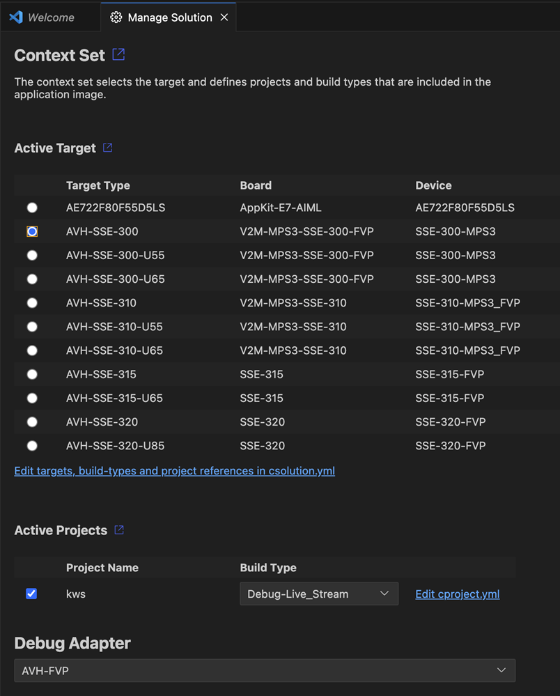

Target Configuration Arm Virtual Hardware
Supported Platforms
The MLEK templates support multiple virtual Arm Cortex-M platforms with Ethos-U NPU acceleration:
| Platform | Processor | NPU Options | Reference Application Support |
|---|---|---|---|
| Corstone-300 | Cortex-M55 | Ethos-U55, Ethos-U65, No NPU | All |
| Corstone-310 | Cortex-M85 | Ethos-U55, Ethos-U65, No NPU | All |
| Corstone-315 | Cortex-M85 | Ethos-U65 | All |
| Corstone-320 | Cortex-M85 | Ethos-U85 | All |
These targets are preconfigured in the solution and allow to run the applications without hardware.
Using VS Code
Open the Manage Solution dialog from the CMSIS Solution Extension window (see user guide for details).
You can select an arbitrary FVP platform. Refer to the the above table, to find out which Cortex-M CPU core and which Ethos-U NPU will be simulated.

Select the Build Types *-Data_Array to create an application image that includes test data for the model.
A run configuration will automatically be created, so you can start the model and the application in the internal VSCode terminal, with the Run feature.